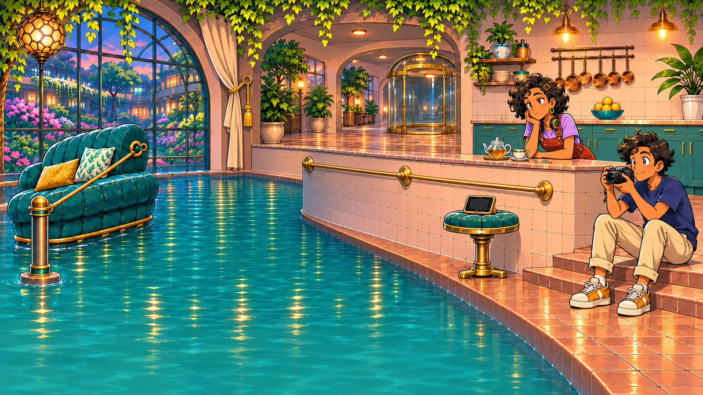
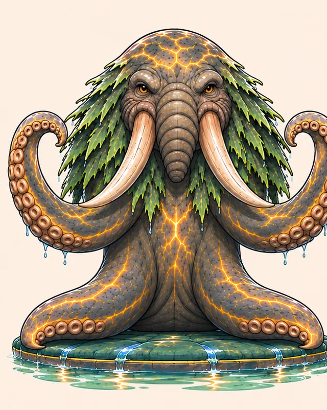
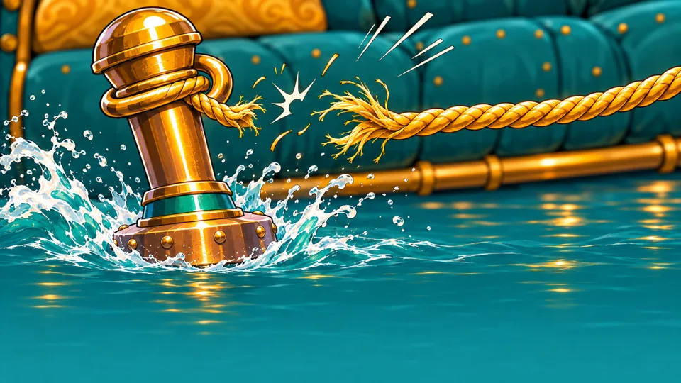
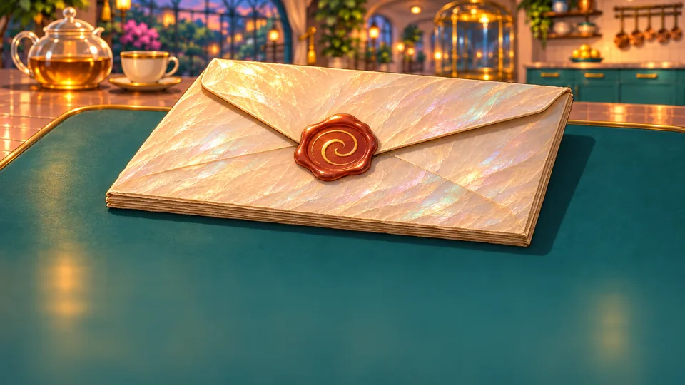
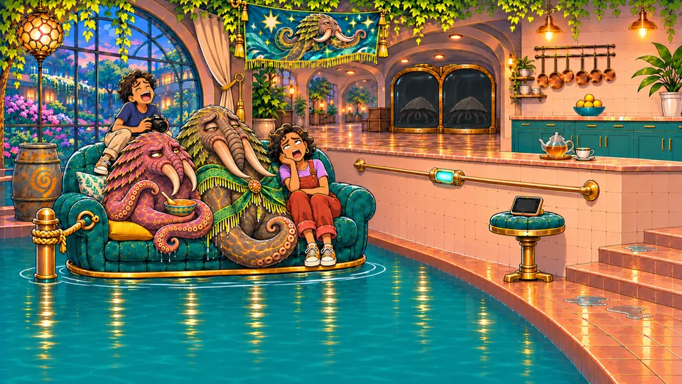

A family sitcom from beneath the ice
Please Mind the Sofa
Helen is human. Vennu is not. Their sofa floats on a leash, the neighbours visit in a sealed glass booth, and nobody in Flat 4 has ever said anything nice on purpose.
Filmed before a live audience · Stillwater · 2850
Now showing
Episode 1 · Three Hundred and Twelve
Twenty-one years ago, Vennu dived 312 metres in Hushwheel, deeper than anyone in three generations. He has mentioned it every day since. Now the Deep Festival invites him back, and he is sure they want to honour him.
They don't. They want him to hand his medal to the twelve-year-old who just did 320.
- Three hundred and twelve metres
- The letter
- The girl who dived 320
- The barrel
- Festival morning
- The wave
- Hushwheel sings
In the can
More episodes are on their way to Flat 4. The sofa is already damp.
The cast of Flat 4, Block C
The family (and the people who have to live next to them)
Tap a card to turn it over.
Posted on the fridge of Flat 4
House rules that always go wrong
The sofa has a leash.
Whoever unties it loses the sofa. It floats. It drifts. It has been to three other flats and once to the stairwell.
Drag the sofa. Gently.
- 2
A tusk on the wall means the whole building is listening.
Oruun speak through their tusks. A translator on the table turns it into English. Lean a tusk on the house rail and Block C hears every word.
- 3
Excitement moves water. Shouting moves the sofa.
When Vennu is upset, the basin sloshes. The sofa is the family barometer.
- 4
Vennu's light veins give every lie away.
Not because they are a lie detector. Because he is a terrible liar. Learn to read him ↓
- 5
No Oruun in the dry kitchen.
A line is painted on the floor. Every episode, somebody tries anyway.

A field guide for humans
Reading Vennu
Oruun carry their feelings in lines of light under the skin. Most Oruun can keep them calm. Vennu cannot.
Gold: proud. Someone has just said "three hundred and twelve". Possibly him.



Where is this?
Stillwater, 2850.
Beneath the ice of a white moon, two hundred light-years from Earth, humans and Oruun share a city, a water line and a lot of paperwork. To the people of Block C it is not an epic. It is Tuesday.
The show is broadcast in their world too: a studio in Stillwater films it in front of a mixed audience. Listen closely and you can hear Oruun tusks clacking in the laughter.
BACK TO FLAT 4 / SUNDAYS AT 21:00
Next on the sofa.
- Episode 02Premieres
- Episode 03Premieres
- Episode 04Premieres
- Episode 05Premieres
Berlin time. Watch links appear after publication.